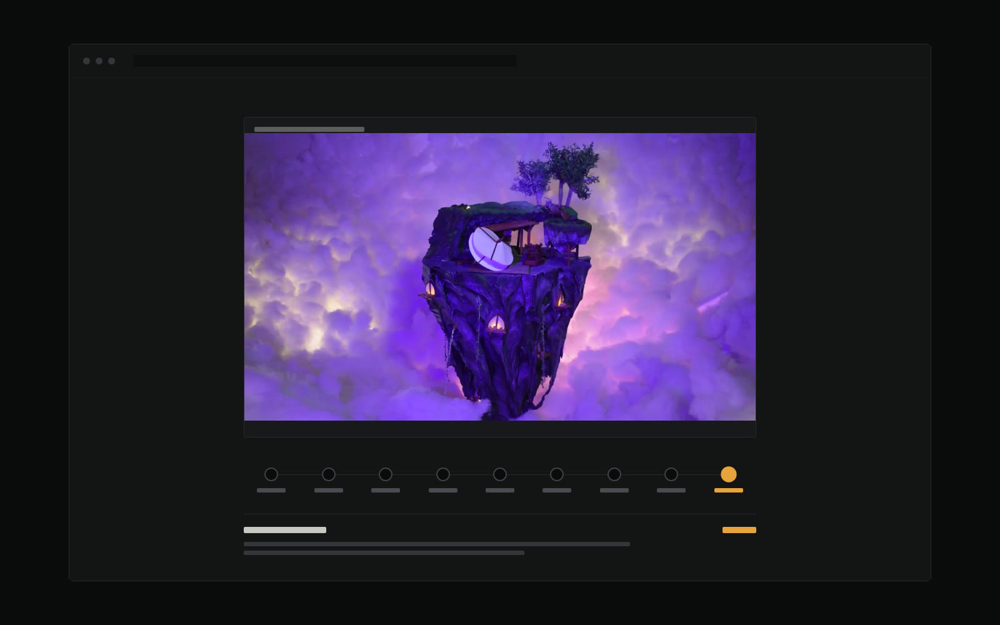

The site you're reading is the project. It replaces a Wix template with a hand-coded static site — no page builder, no framework, no build step — designed and built by directing an agentic AI as the implementer while I held the design decisions, the source material and the final say on what shipped.
The interesting part wasn't asking for code. It was working out which decisions are actually mine: which images represent the work, whether a caption is true, when a pattern is right for the content, and when a "fix" has quietly made something worse.
Method
Not "AI made a website". A loop, repeated dozens of times, with a clear division of labour.
Design Direction
Rather than iterating on one safe layout, three distinct visual worlds were built as working comps and judged side by side.
Built from the capture software I actually shoot on. Charcoal ground, recording-orange accent, monospace frame counters, a viewfinder hero and projects as a contact sheet.
Chosen — to implementLeaning on the materials instead of the tools — kraft card, blue painter's-tape labels, torn-paper project swatches, stencilled headlines.
Not chosenLeaning on the outcome — letterboxed black, projector-beam glow, italic serif titles, laurels as ticket stubs, projects listed as a festival programme.
Not chosenComponent Study
The hardest interface problem on the site: how do you let someone understand a project's evolution without making them read nine captioned cards?
Three patterns were prototyped with real project images — a timeline scrubber, an all-at-once progression strip, and a conventional filmstrip viewer. The filmstrip was rejected precisely because it was the most familiar: a thumbnail rail reads as "pick an image", which is the gallery framing the redesign was trying to escape.
The timeline scrubber won because the stage names carry the story before you touch anything, and because a timeline is the native metaphor for animation work. It then took five rounds of refinement, most of them prompted by me spotting something wrong on screen — see the log below.
Build
Plain HTML, CSS and JavaScript — chosen over a framework so the site stays hand-editable without a toolchain installed, and so it can be hosted free and indefinitely.
The progression scrubber ships as a plain captioned grid and is upgraded by JavaScript, so every stage stays readable with scripting off. Video lives on YouTube rather than in the repo — GitHub Pages is a poor host for 80MB files.
The site went live on 16 August 2026, three days ahead of the date I’d set myself. Every project page now carries its own process story and the copy is all in my own words. What it doesn’t have yet is the Dragonframe direction — what you’re looking at is still the first hand-coded design, and re-skinning the site is the next piece of work. This page gets updated as that lands.